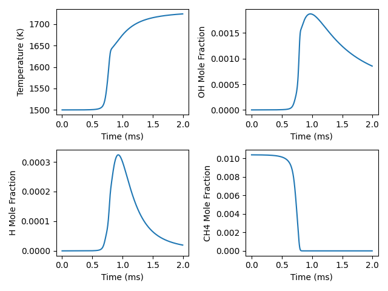
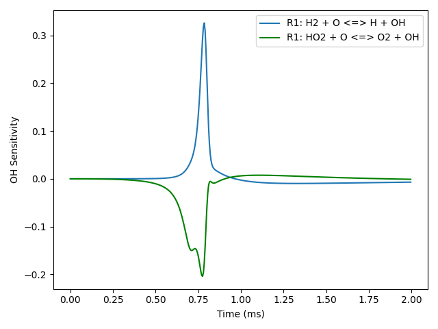

Note
Go to the end to download the full example code.
Constant-pressure, adiabatic kinetics simulation with sensitivity analysis#
Requires: cantera >= 2.5.0, matplotlib >= 2.0
- 
- 
0.000e+00 1500.000 101325.000 9.070228e+05 0.000 0.000
5.000e-06 1500.000 101325.000 9.070230e+05 -0.000 0.000
1.000e-05 1499.999 101325.000 9.070231e+05 0.000 0.000
1.500e-05 1499.999 101325.000 9.070232e+05 0.000 0.000
2.000e-05 1499.998 101325.000 9.070233e+05 0.000 0.000
2.500e-05 1499.998 101325.000 9.070234e+05 0.000 0.000
3.000e-05 1499.997 101325.000 9.070235e+05 0.000 0.000
3.500e-05 1499.997 101325.000 9.070236e+05 0.000 0.000
4.000e-05 1499.997 101325.000 9.070237e+05 0.000 0.000
4.500e-05 1499.996 101325.000 9.070238e+05 0.000 -0.000
5.000e-05 1499.996 101325.000 9.070239e+05 0.000 -0.000
5.500e-05 1499.996 101325.000 9.070240e+05 0.000 -0.000
6.000e-05 1499.995 101325.000 9.070241e+05 0.000 -0.000
6.500e-05 1499.995 101325.000 9.070241e+05 0.000 -0.000
7.000e-05 1499.995 101325.000 9.070242e+05 0.000 -0.000
7.500e-05 1499.995 101325.000 9.070242e+05 0.000 -0.000
8.000e-05 1499.994 101325.000 9.070243e+05 0.000 -0.000
8.500e-05 1499.994 101325.000 9.070243e+05 0.000 -0.000
9.000e-05 1499.994 101325.000 9.070244e+05 0.000 -0.000
9.500e-05 1499.994 101325.000 9.070244e+05 0.000 -0.000
1.000e-04 1499.994 101325.000 9.070244e+05 0.000 -0.000
1.050e-04 1499.994 101325.000 9.070244e+05 0.000 -0.000
1.100e-04 1499.994 101325.000 9.070244e+05 0.000 -0.000
1.150e-04 1499.994 101325.000 9.070244e+05 0.000 -0.000
1.200e-04 1499.994 101325.000 9.070243e+05 0.000 -0.000
1.250e-04 1499.994 101325.000 9.070243e+05 0.000 -0.000
1.300e-04 1499.994 101325.000 9.070242e+05 0.000 -0.000
1.350e-04 1499.994 101325.000 9.070242e+05 0.000 -0.000
1.400e-04 1499.994 101325.000 9.070241e+05 0.000 -0.000
1.450e-04 1499.994 101325.000 9.070240e+05 0.000 -0.000
1.500e-04 1499.995 101325.000 9.070239e+05 0.000 -0.000
1.550e-04 1499.995 101325.000 9.070237e+05 0.000 -0.000
1.600e-04 1499.995 101325.000 9.070236e+05 0.000 -0.000
1.650e-04 1499.996 101325.000 9.070234e+05 0.000 -0.000
1.700e-04 1499.996 101325.000 9.070232e+05 0.000 -0.000
1.750e-04 1499.997 101325.000 9.070230e+05 0.000 -0.000
1.800e-04 1499.997 101325.000 9.070228e+05 0.000 -0.000
1.850e-04 1499.998 101325.000 9.070226e+05 0.000 -0.000
1.900e-04 1499.999 101325.000 9.070223e+05 0.000 -0.000
1.950e-04 1500.000 101325.000 9.070220e+05 0.000 -0.000
2.000e-04 1500.001 101325.000 9.070217e+05 0.000 -0.000
2.050e-04 1500.002 101325.000 9.070214e+05 0.000 -0.001
2.100e-04 1500.003 101325.000 9.070210e+05 0.000 -0.001
2.150e-04 1500.004 101325.000 9.070206e+05 0.000 -0.001
2.200e-04 1500.005 101325.000 9.070202e+05 0.000 -0.001
2.250e-04 1500.006 101325.000 9.070198e+05 0.000 -0.001
2.300e-04 1500.008 101325.000 9.070193e+05 0.000 -0.001
2.350e-04 1500.010 101325.000 9.070188e+05 0.000 -0.001
2.400e-04 1500.011 101325.000 9.070182e+05 0.000 -0.001
2.450e-04 1500.013 101325.000 9.070176e+05 0.000 -0.001
2.500e-04 1500.015 101325.000 9.070170e+05 0.000 -0.001
2.550e-04 1500.017 101325.000 9.070163e+05 0.000 -0.001
2.600e-04 1500.019 101325.000 9.070156e+05 0.000 -0.001
2.650e-04 1500.022 101325.000 9.070148e+05 0.000 -0.001
2.700e-04 1500.024 101325.000 9.070140e+05 0.000 -0.001
2.750e-04 1500.027 101325.000 9.070132e+05 0.000 -0.001
2.800e-04 1500.029 101325.000 9.070123e+05 0.000 -0.001
2.850e-04 1500.033 101325.000 9.070113e+05 0.000 -0.001
2.900e-04 1500.036 101325.000 9.070103e+05 0.000 -0.001
2.950e-04 1500.039 101325.000 9.070092e+05 0.000 -0.001
3.000e-04 1500.043 101325.000 9.070080e+05 0.000 -0.002
3.050e-04 1500.047 101325.000 9.070068e+05 0.000 -0.002
3.100e-04 1500.051 101325.000 9.070055e+05 0.000 -0.002
3.150e-04 1500.055 101325.000 9.070041e+05 0.000 -0.002
3.200e-04 1500.059 101325.000 9.070027e+05 0.000 -0.002
3.250e-04 1500.064 101325.000 9.070012e+05 0.000 -0.002
3.300e-04 1500.069 101325.000 9.069995e+05 0.000 -0.002
3.350e-04 1500.075 101325.000 9.069978e+05 0.000 -0.002
3.400e-04 1500.081 101325.000 9.069960e+05 0.000 -0.002
3.450e-04 1500.087 101325.000 9.069941e+05 0.000 -0.002
3.500e-04 1500.093 101325.000 9.069920e+05 0.000 -0.002
3.550e-04 1500.100 101325.000 9.069899e+05 0.000 -0.003
3.600e-04 1500.107 101325.000 9.069876e+05 0.000 -0.003
3.650e-04 1500.115 101325.000 9.069852e+05 0.000 -0.003
3.700e-04 1500.123 101325.000 9.069826e+05 0.000 -0.003
3.750e-04 1500.132 101325.000 9.069799e+05 0.000 -0.003
3.800e-04 1500.141 101325.000 9.069771e+05 0.000 -0.003
3.850e-04 1500.151 101325.000 9.069740e+05 0.000 -0.003
3.900e-04 1500.161 101325.000 9.069708e+05 0.000 -0.004
3.950e-04 1500.172 101325.000 9.069674e+05 0.000 -0.004
4.000e-04 1500.184 101325.000 9.069638e+05 0.000 -0.004
4.050e-04 1500.196 101325.000 9.069600e+05 0.000 -0.004
4.100e-04 1500.209 101325.000 9.069560e+05 0.000 -0.004
4.150e-04 1500.222 101325.000 9.069518e+05 0.000 -0.005
4.200e-04 1500.237 101325.000 9.069472e+05 0.000 -0.005
4.250e-04 1500.253 101325.000 9.069424e+05 0.000 -0.005
4.300e-04 1500.269 101325.000 9.069374e+05 0.000 -0.005
4.350e-04 1500.286 101325.000 9.069320e+05 0.000 -0.006
4.400e-04 1500.305 101325.000 9.069263e+05 0.000 -0.006
4.450e-04 1500.325 101325.000 9.069202e+05 0.000 -0.006
4.500e-04 1500.345 101325.000 9.069138e+05 0.000 -0.006
4.550e-04 1500.368 101325.000 9.069069e+05 0.000 -0.007
4.600e-04 1500.391 101325.000 9.068997e+05 0.000 -0.007
4.650e-04 1500.416 101325.000 9.068920e+05 0.000 -0.007
4.700e-04 1500.443 101325.000 9.068838e+05 0.000 -0.008
4.750e-04 1500.471 101325.000 9.068751e+05 0.000 -0.008
4.800e-04 1500.501 101325.000 9.068658e+05 0.000 -0.008
4.850e-04 1500.534 101325.000 9.068559e+05 0.000 -0.009
4.900e-04 1500.568 101325.000 9.068454e+05 0.001 -0.009
4.950e-04 1500.605 101325.000 9.068341e+05 0.001 -0.010
5.000e-04 1500.644 101325.000 9.068222e+05 0.001 -0.010
5.050e-04 1500.685 101325.000 9.068094e+05 0.001 -0.011
5.100e-04 1500.730 101325.000 9.067957e+05 0.001 -0.011
5.150e-04 1500.777 101325.000 9.067811e+05 0.001 -0.012
5.200e-04 1500.828 101325.000 9.067655e+05 0.001 -0.013
5.250e-04 1500.883 101325.000 9.067488e+05 0.001 -0.013
5.300e-04 1500.942 101325.000 9.067309e+05 0.001 -0.014
5.350e-04 1501.004 101325.000 9.067117e+05 0.001 -0.015
5.400e-04 1501.072 101325.000 9.066911e+05 0.001 -0.016
5.450e-04 1501.144 101325.000 9.066689e+05 0.001 -0.017
5.500e-04 1501.222 101325.000 9.066450e+05 0.001 -0.018
5.550e-04 1501.306 101325.000 9.066193e+05 0.001 -0.019
5.600e-04 1501.397 101325.000 9.065915e+05 0.002 -0.020
5.650e-04 1501.495 101325.000 9.065615e+05 0.002 -0.021
5.700e-04 1501.601 101325.000 9.065291e+05 0.002 -0.022
5.750e-04 1501.716 101325.000 9.064939e+05 0.002 -0.024
5.800e-04 1501.841 101325.000 9.064557e+05 0.002 -0.025
5.850e-04 1501.976 101325.000 9.064141e+05 0.002 -0.027
5.900e-04 1502.124 101325.000 9.063687e+05 0.003 -0.029
5.950e-04 1502.286 101325.000 9.063191e+05 0.003 -0.031
6.000e-04 1502.463 101325.000 9.062648e+05 0.003 -0.033
6.050e-04 1502.657 101325.000 9.062051e+05 0.004 -0.036
6.100e-04 1502.871 101325.000 9.061394e+05 0.004 -0.039
6.150e-04 1503.107 101325.000 9.060667e+05 0.004 -0.042
6.200e-04 1503.369 101325.000 9.059861e+05 0.005 -0.045
6.250e-04 1503.660 101325.000 9.058964e+05 0.005 -0.049
6.300e-04 1503.985 101325.000 9.057963e+05 0.006 -0.053
6.350e-04 1504.349 101325.000 9.056838e+05 0.007 -0.057
6.400e-04 1504.759 101325.000 9.055572e+05 0.008 -0.062
6.450e-04 1505.223 101325.000 9.054137e+05 0.008 -0.068
6.500e-04 1505.751 101325.000 9.052505e+05 0.009 -0.074
6.550e-04 1506.353 101325.000 9.050637e+05 0.011 -0.080
6.600e-04 1507.046 101325.000 9.048490e+05 0.012 -0.087
6.650e-04 1507.845 101325.000 9.046007e+05 0.014 -0.095
6.700e-04 1508.773 101325.000 9.043122e+05 0.015 -0.103
6.750e-04 1509.856 101325.000 9.039754e+05 0.018 -0.111
6.800e-04 1511.124 101325.000 9.035807e+05 0.020 -0.119
6.850e-04 1512.613 101325.000 9.031168e+05 0.022 -0.127
6.900e-04 1514.363 101325.000 9.025711e+05 0.025 -0.135
6.950e-04 1516.419 101325.000 9.019299e+05 0.028 -0.141
7.000e-04 1518.826 101325.000 9.011789e+05 0.032 -0.146
7.050e-04 1521.627 101325.000 9.003050e+05 0.036 -0.149
7.100e-04 1524.857 101325.000 8.992971e+05 0.040 -0.150
7.150e-04 1528.542 101325.000 8.981477e+05 0.046 -0.150
7.200e-04 1532.691 101325.000 8.968536e+05 0.052 -0.148
7.250e-04 1537.302 101325.000 8.954160e+05 0.059 -0.147
7.300e-04 1542.360 101325.000 8.938399e+05 0.068 -0.146
7.350e-04 1547.844 101325.000 8.921318e+05 0.080 -0.146
7.400e-04 1553.732 101325.000 8.902988e+05 0.094 -0.149
7.450e-04 1560.006 101325.000 8.883468e+05 0.112 -0.154
7.500e-04 1566.654 101325.000 8.862799e+05 0.133 -0.162
7.550e-04 1573.666 101325.000 8.841015e+05 0.159 -0.172
7.600e-04 1581.030 101325.000 8.818159e+05 0.189 -0.183
7.650e-04 1588.715 101325.000 8.794329e+05 0.223 -0.194
7.700e-04 1596.650 101325.000 8.769752e+05 0.259 -0.202
7.750e-04 1604.689 101325.000 8.744881e+05 0.293 -0.204
7.800e-04 1612.583 101325.000 8.720501e+05 0.318 -0.196
7.850e-04 1619.970 101325.000 8.697737e+05 0.326 -0.175
7.900e-04 1626.442 101325.000 8.677857e+05 0.310 -0.142
7.950e-04 1631.686 101325.000 8.661832e+05 0.270 -0.101
8.000e-04 1635.621 101325.000 8.649906e+05 0.215 -0.062
8.050e-04 1638.414 101325.000 8.641549e+05 0.158 -0.032
8.100e-04 1640.369 101325.000 8.635812e+05 0.110 -0.014
8.150e-04 1641.789 101325.000 8.631753e+05 0.075 -0.007
8.200e-04 1642.901 101325.000 8.628657e+05 0.052 -0.005
8.250e-04 1643.854 101325.000 8.626068e+05 0.038 -0.006
8.300e-04 1644.731 101325.000 8.623721e+05 0.030 -0.008
8.350e-04 1645.579 101325.000 8.621477e+05 0.025 -0.009
8.400e-04 1646.419 101325.000 8.619262e+05 0.022 -0.009
8.450e-04 1647.265 101325.000 8.617043e+05 0.020 -0.009
8.500e-04 1648.119 101325.000 8.614804e+05 0.019 -0.008
8.550e-04 1648.984 101325.000 8.612539e+05 0.017 -0.007
8.600e-04 1649.860 101325.000 8.610248e+05 0.016 -0.007
8.650e-04 1650.746 101325.000 8.607932e+05 0.015 -0.006
8.700e-04 1651.642 101325.000 8.605593e+05 0.014 -0.005
8.750e-04 1652.545 101325.000 8.603234e+05 0.013 -0.004
8.800e-04 1653.456 101325.000 8.600858e+05 0.012 -0.003
8.850e-04 1654.372 101325.000 8.598469e+05 0.011 -0.003
8.900e-04 1655.293 101325.000 8.596068e+05 0.010 -0.002
8.950e-04 1656.217 101325.000 8.593660e+05 0.009 -0.001
9.000e-04 1657.144 101325.000 8.591247e+05 0.008 -0.001
9.050e-04 1658.071 101325.000 8.588832e+05 0.007 0.000
9.100e-04 1658.999 101325.000 8.586418e+05 0.007 0.001
9.150e-04 1659.927 101325.000 8.584006e+05 0.006 0.001
9.200e-04 1660.852 101325.000 8.581600e+05 0.005 0.002
9.250e-04 1661.775 101325.000 8.579201e+05 0.005 0.002
9.300e-04 1662.694 101325.000 8.576812e+05 0.004 0.002
9.350e-04 1663.610 101325.000 8.574435e+05 0.003 0.003
9.400e-04 1664.520 101325.000 8.572071e+05 0.003 0.003
9.450e-04 1665.425 101325.000 8.569722e+05 0.002 0.004
9.500e-04 1666.324 101325.000 8.567390e+05 0.002 0.004
9.550e-04 1667.217 101325.000 8.565076e+05 0.001 0.004
9.600e-04 1668.102 101325.000 8.562782e+05 0.001 0.005
9.650e-04 1668.979 101325.000 8.560508e+05 0.000 0.005
9.700e-04 1669.848 101325.000 8.558256e+05 -0.000 0.005
9.750e-04 1670.709 101325.000 8.556027e+05 -0.001 0.005
9.800e-04 1671.561 101325.000 8.553821e+05 -0.001 0.006
9.850e-04 1672.403 101325.000 8.551640e+05 -0.002 0.006
9.900e-04 1673.237 101325.000 8.549484e+05 -0.002 0.006
9.950e-04 1674.060 101325.000 8.547353e+05 -0.002 0.006
1.000e-03 1674.873 101325.000 8.545249e+05 -0.003 0.006
1.005e-03 1675.677 101325.000 8.543172e+05 -0.003 0.006
1.010e-03 1676.470 101325.000 8.541122e+05 -0.003 0.007
1.015e-03 1677.252 101325.000 8.539099e+05 -0.004 0.007
1.020e-03 1678.024 101325.000 8.537105e+05 -0.004 0.007
1.025e-03 1678.786 101325.000 8.535138e+05 -0.004 0.007
1.030e-03 1679.536 101325.000 8.533199e+05 -0.005 0.007
1.035e-03 1680.276 101325.000 8.531289e+05 -0.005 0.007
1.040e-03 1681.005 101325.000 8.529407e+05 -0.005 0.007
1.045e-03 1681.723 101325.000 8.527553e+05 -0.005 0.007
1.050e-03 1682.431 101325.000 8.525727e+05 -0.005 0.007
1.055e-03 1683.127 101325.000 8.523930e+05 -0.006 0.007
1.060e-03 1683.813 101325.000 8.522161e+05 -0.006 0.007
1.065e-03 1684.488 101325.000 8.520419e+05 -0.006 0.007
1.070e-03 1685.153 101325.000 8.518706e+05 -0.006 0.008
1.075e-03 1685.807 101325.000 8.517020e+05 -0.006 0.008
1.080e-03 1686.450 101325.000 8.515362e+05 -0.007 0.008
1.085e-03 1687.083 101325.000 8.513731e+05 -0.007 0.008
1.090e-03 1687.705 101325.000 8.512127e+05 -0.007 0.008
1.095e-03 1688.318 101325.000 8.510549e+05 -0.007 0.008
1.100e-03 1688.920 101325.000 8.508998e+05 -0.007 0.008
1.105e-03 1689.512 101325.000 8.507473e+05 -0.007 0.008
1.110e-03 1690.094 101325.000 8.505974e+05 -0.008 0.008
1.115e-03 1690.666 101325.000 8.504501e+05 -0.008 0.008
1.120e-03 1691.229 101325.000 8.503052e+05 -0.008 0.008
1.125e-03 1691.782 101325.000 8.501629e+05 -0.008 0.008
1.130e-03 1692.326 101325.000 8.500229e+05 -0.008 0.008
1.135e-03 1692.860 101325.000 8.498854e+05 -0.008 0.008
1.140e-03 1693.385 101325.000 8.497503e+05 -0.008 0.008
1.145e-03 1693.901 101325.000 8.496175e+05 -0.008 0.007
1.150e-03 1694.408 101325.000 8.494870e+05 -0.008 0.007
1.155e-03 1694.907 101325.000 8.493588e+05 -0.009 0.007
1.160e-03 1695.397 101325.000 8.492328e+05 -0.009 0.007
1.165e-03 1695.878 101325.000 8.491091e+05 -0.009 0.007
1.170e-03 1696.351 101325.000 8.489874e+05 -0.009 0.007
1.175e-03 1696.816 101325.000 8.488679e+05 -0.009 0.007
1.180e-03 1697.272 101325.000 8.487505e+05 -0.009 0.007
1.185e-03 1697.721 101325.000 8.486352e+05 -0.009 0.007
1.190e-03 1698.162 101325.000 8.485218e+05 -0.009 0.007
1.195e-03 1698.595 101325.000 8.484105e+05 -0.009 0.007
1.200e-03 1699.021 101325.000 8.483010e+05 -0.009 0.007
1.205e-03 1699.440 101325.000 8.481935e+05 -0.009 0.007
1.210e-03 1699.851 101325.000 8.480879e+05 -0.009 0.007
1.215e-03 1700.255 101325.000 8.479841e+05 -0.009 0.007
1.220e-03 1700.652 101325.000 8.478821e+05 -0.009 0.007
1.225e-03 1701.042 101325.000 8.477819e+05 -0.009 0.007
1.230e-03 1701.425 101325.000 8.476834e+05 -0.009 0.007
1.235e-03 1701.802 101325.000 8.475866e+05 -0.009 0.007
1.240e-03 1702.172 101325.000 8.474915e+05 -0.009 0.007
1.245e-03 1702.536 101325.000 8.473980e+05 -0.010 0.007
1.250e-03 1702.894 101325.000 8.473062e+05 -0.010 0.007
1.255e-03 1703.245 101325.000 8.472159e+05 -0.010 0.006
1.260e-03 1703.591 101325.000 8.471272e+05 -0.010 0.006
1.265e-03 1703.931 101325.000 8.470400e+05 -0.010 0.006
1.270e-03 1704.264 101325.000 8.469543e+05 -0.010 0.006
1.275e-03 1704.593 101325.000 8.468700e+05 -0.010 0.006
1.280e-03 1704.915 101325.000 8.467872e+05 -0.010 0.006
1.285e-03 1705.232 101325.000 8.467058e+05 -0.010 0.006
1.290e-03 1705.544 101325.000 8.466258e+05 -0.010 0.006
1.295e-03 1705.851 101325.000 8.465471e+05 -0.010 0.006
1.300e-03 1706.152 101325.000 8.464697e+05 -0.010 0.006
1.305e-03 1706.449 101325.000 8.463937e+05 -0.010 0.006
1.310e-03 1706.740 101325.000 8.463189e+05 -0.010 0.006
1.315e-03 1707.027 101325.000 8.462453e+05 -0.010 0.006
1.320e-03 1707.308 101325.000 8.461730e+05 -0.010 0.006
1.325e-03 1707.586 101325.000 8.461019e+05 -0.010 0.006
1.330e-03 1707.858 101325.000 8.460319e+05 -0.010 0.006
1.335e-03 1708.126 101325.000 8.459631e+05 -0.010 0.005
1.340e-03 1708.390 101325.000 8.458955e+05 -0.010 0.005
1.345e-03 1708.650 101325.000 8.458289e+05 -0.010 0.005
1.350e-03 1708.905 101325.000 8.457634e+05 -0.010 0.005
1.355e-03 1709.156 101325.000 8.456990e+05 -0.010 0.005
1.360e-03 1709.403 101325.000 8.456356e+05 -0.010 0.005
1.365e-03 1709.646 101325.000 8.455733e+05 -0.010 0.005
1.370e-03 1709.885 101325.000 8.455120e+05 -0.010 0.005
1.375e-03 1710.120 101325.000 8.454516e+05 -0.010 0.005
1.380e-03 1710.352 101325.000 8.453922e+05 -0.010 0.005
1.385e-03 1710.580 101325.000 8.453338e+05 -0.010 0.005
1.390e-03 1710.804 101325.000 8.452762e+05 -0.010 0.005
1.395e-03 1711.025 101325.000 8.452196e+05 -0.010 0.005
1.400e-03 1711.242 101325.000 8.451639e+05 -0.010 0.005
1.405e-03 1711.456 101325.000 8.451090e+05 -0.010 0.005
1.410e-03 1711.666 101325.000 8.450551e+05 -0.010 0.005
1.415e-03 1711.874 101325.000 8.450019e+05 -0.010 0.004
1.420e-03 1712.078 101325.000 8.449496e+05 -0.010 0.004
1.425e-03 1712.279 101325.000 8.448980e+05 -0.010 0.004
1.430e-03 1712.477 101325.000 8.448473e+05 -0.010 0.004
1.435e-03 1712.671 101325.000 8.447974e+05 -0.010 0.004
1.440e-03 1712.863 101325.000 8.447482e+05 -0.009 0.004
1.445e-03 1713.052 101325.000 8.446997e+05 -0.009 0.004
1.450e-03 1713.238 101325.000 8.446520e+05 -0.009 0.004
1.455e-03 1713.421 101325.000 8.446050e+05 -0.009 0.004
1.460e-03 1713.602 101325.000 8.445588e+05 -0.009 0.004
1.465e-03 1713.780 101325.000 8.445132e+05 -0.009 0.004
1.470e-03 1713.955 101325.000 8.444683e+05 -0.009 0.004
1.475e-03 1714.127 101325.000 8.444240e+05 -0.009 0.004
1.480e-03 1714.297 101325.000 8.443804e+05 -0.009 0.004
1.485e-03 1714.465 101325.000 8.443375e+05 -0.009 0.004
1.490e-03 1714.630 101325.000 8.442952e+05 -0.009 0.004
1.495e-03 1714.792 101325.000 8.442535e+05 -0.009 0.003
1.500e-03 1714.953 101325.000 8.442124e+05 -0.009 0.003
1.505e-03 1715.111 101325.000 8.441719e+05 -0.009 0.003
1.510e-03 1715.266 101325.000 8.441320e+05 -0.009 0.003
1.515e-03 1715.420 101325.000 8.440927e+05 -0.009 0.003
1.520e-03 1715.571 101325.000 8.440539e+05 -0.009 0.003
1.525e-03 1715.720 101325.000 8.440157e+05 -0.009 0.003
1.530e-03 1715.867 101325.000 8.439780e+05 -0.009 0.003
1.535e-03 1716.012 101325.000 8.439408e+05 -0.009 0.003
1.540e-03 1716.155 101325.000 8.439042e+05 -0.009 0.003
1.545e-03 1716.296 101325.000 8.438681e+05 -0.009 0.003
1.550e-03 1716.434 101325.000 8.438325e+05 -0.009 0.003
1.555e-03 1716.571 101325.000 8.437974e+05 -0.009 0.003
1.560e-03 1716.706 101325.000 8.437628e+05 -0.009 0.003
1.565e-03 1716.840 101325.000 8.437286e+05 -0.009 0.003
1.570e-03 1716.971 101325.000 8.436950e+05 -0.009 0.003
1.575e-03 1717.100 101325.000 8.436618e+05 -0.009 0.003
1.580e-03 1717.228 101325.000 8.436290e+05 -0.009 0.003
1.585e-03 1717.354 101325.000 8.435967e+05 -0.009 0.002
1.590e-03 1717.479 101325.000 8.435648e+05 -0.009 0.002
1.595e-03 1717.601 101325.000 8.435334e+05 -0.009 0.002
1.600e-03 1717.722 101325.000 8.435023e+05 -0.009 0.002
1.605e-03 1717.842 101325.000 8.434717e+05 -0.009 0.002
1.610e-03 1717.960 101325.000 8.434415e+05 -0.009 0.002
1.615e-03 1718.076 101325.000 8.434117e+05 -0.009 0.002
1.620e-03 1718.191 101325.000 8.433823e+05 -0.009 0.002
1.625e-03 1718.304 101325.000 8.433533e+05 -0.009 0.002
1.630e-03 1718.415 101325.000 8.433246e+05 -0.009 0.002
1.635e-03 1718.526 101325.000 8.432964e+05 -0.009 0.002
1.640e-03 1718.635 101325.000 8.432685e+05 -0.009 0.002
1.645e-03 1718.742 101325.000 8.432409e+05 -0.009 0.002
1.650e-03 1718.848 101325.000 8.432137e+05 -0.009 0.002
1.655e-03 1718.953 101325.000 8.431869e+05 -0.008 0.002
1.660e-03 1719.056 101325.000 8.431604e+05 -0.008 0.002
1.665e-03 1719.158 101325.000 8.431342e+05 -0.008 0.002
1.670e-03 1719.259 101325.000 8.431084e+05 -0.008 0.002
1.675e-03 1719.358 101325.000 8.430829e+05 -0.008 0.002
1.680e-03 1719.457 101325.000 8.430577e+05 -0.008 0.001
1.685e-03 1719.554 101325.000 8.430329e+05 -0.008 0.001
1.690e-03 1719.649 101325.000 8.430083e+05 -0.008 0.001
1.695e-03 1719.744 101325.000 8.429841e+05 -0.008 0.001
1.700e-03 1719.837 101325.000 8.429601e+05 -0.008 0.001
1.705e-03 1719.930 101325.000 8.429364e+05 -0.008 0.001
1.710e-03 1720.021 101325.000 8.429131e+05 -0.008 0.001
1.715e-03 1720.111 101325.000 8.428900e+05 -0.008 0.001
1.720e-03 1720.200 101325.000 8.428672e+05 -0.008 0.001
1.725e-03 1720.288 101325.000 8.428447e+05 -0.008 0.001
1.730e-03 1720.374 101325.000 8.428224e+05 -0.008 0.001
1.735e-03 1720.460 101325.000 8.428004e+05 -0.008 0.001
1.740e-03 1720.545 101325.000 8.427787e+05 -0.008 0.001
1.745e-03 1720.628 101325.000 8.427573e+05 -0.008 0.001
1.750e-03 1720.711 101325.000 8.427361e+05 -0.008 0.001
1.755e-03 1720.793 101325.000 8.427151e+05 -0.008 0.001
1.760e-03 1720.874 101325.000 8.426944e+05 -0.008 0.001
1.765e-03 1720.953 101325.000 8.426739e+05 -0.008 0.001
1.770e-03 1721.032 101325.000 8.426537e+05 -0.008 0.001
1.775e-03 1721.110 101325.000 8.426337e+05 -0.008 0.001
1.780e-03 1721.187 101325.000 8.426140e+05 -0.008 0.001
1.785e-03 1721.264 101325.000 8.425944e+05 -0.008 0.001
1.790e-03 1721.339 101325.000 8.425751e+05 -0.008 0.001
1.795e-03 1721.413 101325.000 8.425560e+05 -0.008 0.000
1.800e-03 1721.487 101325.000 8.425372e+05 -0.008 0.000
1.805e-03 1721.560 101325.000 8.425185e+05 -0.008 0.000
1.810e-03 1721.631 101325.000 8.425001e+05 -0.008 0.000
1.815e-03 1721.703 101325.000 8.424818e+05 -0.008 0.000
1.820e-03 1721.773 101325.000 8.424638e+05 -0.008 0.000
1.825e-03 1721.842 101325.000 8.424460e+05 -0.008 0.000
1.830e-03 1721.911 101325.000 8.424284e+05 -0.008 0.000
1.835e-03 1721.979 101325.000 8.424109e+05 -0.008 0.000
1.840e-03 1722.046 101325.000 8.423937e+05 -0.008 0.000
1.845e-03 1722.113 101325.000 8.423767e+05 -0.008 0.000
1.850e-03 1722.178 101325.000 8.423598e+05 -0.008 0.000
1.855e-03 1722.243 101325.000 8.423431e+05 -0.008 0.000
1.860e-03 1722.308 101325.000 8.423266e+05 -0.007 -0.000
1.865e-03 1722.371 101325.000 8.423103e+05 -0.007 -0.000
1.870e-03 1722.434 101325.000 8.422942e+05 -0.007 -0.000
1.875e-03 1722.497 101325.000 8.422782e+05 -0.007 -0.000
1.880e-03 1722.558 101325.000 8.422624e+05 -0.007 -0.000
1.885e-03 1722.619 101325.000 8.422468e+05 -0.007 -0.000
1.890e-03 1722.679 101325.000 8.422314e+05 -0.007 -0.000
1.895e-03 1722.739 101325.000 8.422161e+05 -0.007 -0.000
1.900e-03 1722.798 101325.000 8.422009e+05 -0.007 -0.000
1.905e-03 1722.856 101325.000 8.421860e+05 -0.007 -0.000
1.910e-03 1722.914 101325.000 8.421711e+05 -0.007 -0.000
1.915e-03 1722.971 101325.000 8.421565e+05 -0.007 -0.000
1.920e-03 1723.028 101325.000 8.421420e+05 -0.007 -0.000
1.925e-03 1723.084 101325.000 8.421276e+05 -0.007 -0.000
1.930e-03 1723.139 101325.000 8.421134e+05 -0.007 -0.001
1.935e-03 1723.194 101325.000 8.420994e+05 -0.007 -0.001
1.940e-03 1723.248 101325.000 8.420855e+05 -0.007 -0.001
1.945e-03 1723.302 101325.000 8.420717e+05 -0.007 -0.001
1.950e-03 1723.355 101325.000 8.420580e+05 -0.007 -0.001
1.955e-03 1723.407 101325.000 8.420446e+05 -0.007 -0.001
1.960e-03 1723.460 101325.000 8.420312e+05 -0.007 -0.001
1.965e-03 1723.511 101325.000 8.420180e+05 -0.007 -0.001
1.970e-03 1723.562 101325.000 8.420049e+05 -0.007 -0.001
1.975e-03 1723.613 101325.000 8.419919e+05 -0.007 -0.001
1.980e-03 1723.663 101325.000 8.419791e+05 -0.007 -0.001
1.985e-03 1723.712 101325.000 8.419664e+05 -0.007 -0.001
1.990e-03 1723.761 101325.000 8.419538e+05 -0.007 -0.001
1.995e-03 1723.810 101325.000 8.419414e+05 -0.007 -0.001
import sys
import numpy as np
import cantera as ct
gas = ct.Solution('gri30.yaml')
temp = 1500.0
pres = ct.one_atm
gas.TPX = temp, pres, 'CH4:0.1, O2:2, N2:7.52'
r = ct.IdealGasConstPressureReactor(gas, name='R1')
sim = ct.ReactorNet([r])
# enable sensitivity with respect to the rates of the first 10
# reactions (reactions 0 through 9)
for i in range(10):
r.add_sensitivity_reaction(i)
# set the tolerances for the solution and for the sensitivity coefficients
sim.rtol = 1.0e-6
sim.atol = 1.0e-15
sim.rtol_sensitivity = 1.0e-6
sim.atol_sensitivity = 1.0e-6
states = ct.SolutionArray(gas, extra=['t', 's2', 's3'])
for t in np.arange(0, 2e-3, 5e-6):
sim.advance(t)
s2 = sim.sensitivity('OH', 2) # sensitivity of OH to reaction 2
s3 = sim.sensitivity('OH', 3) # sensitivity of OH to reaction 3
states.append(r.thermo.state, t=1000*t, s2=s2, s3=s3)
print('{:10.3e} {:10.3f} {:10.3f} {:14.6e} {:10.3f} {:10.3f}'.format(
sim.time, r.T, r.thermo.P, r.thermo.u, s2, s3))
# plot the results if matplotlib is installed.
# see http://matplotlib.org/ to get it
if '--plot' in sys.argv:
import matplotlib.pyplot as plt
plt.subplot(2, 2, 1)
plt.plot(states.t, states.T)
plt.xlabel('Time (ms)')
plt.ylabel('Temperature (K)')
plt.subplot(2, 2, 2)
plt.plot(states.t, states('OH').X)
plt.xlabel('Time (ms)')
plt.ylabel('OH Mole Fraction')
plt.subplot(2, 2, 3)
plt.plot(states.t, states('H').X)
plt.xlabel('Time (ms)')
plt.ylabel('H Mole Fraction')
plt.subplot(2, 2, 4)
plt.plot(states.t, states('CH4').X)
plt.xlabel('Time (ms)')
plt.ylabel('CH4 Mole Fraction')
plt.tight_layout()
plt.figure(2)
plt.plot(states.t, states.s2, '-', label=sim.sensitivity_parameter_name(2))
plt.plot(states.t, states.s3, '-g', label=sim.sensitivity_parameter_name(3))
plt.legend(loc='best')
plt.xlabel('Time (ms)')
plt.ylabel('OH Sensitivity')
plt.tight_layout()
plt.show()
else:
print("""To view a plot of these results, run this script with the option '--plot""")
Total running time of the script: (0 minutes 0.853 seconds)